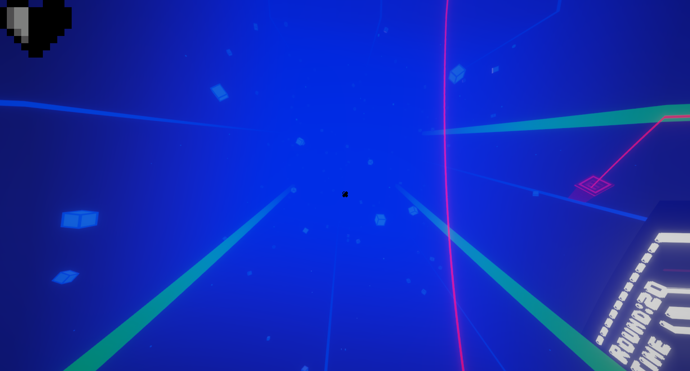
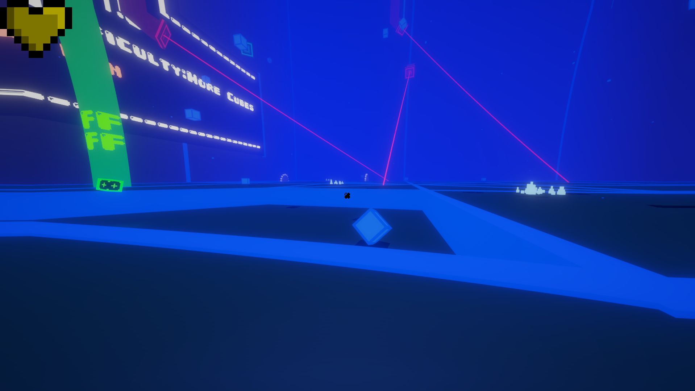

Cube-Pit
Il mio primo gioco che ho pubblicato.

Affronta livelli pieni di ostacoli cubici e un'estetica mozzafiato.

Raccogli power-up e supera i tuoi limiti con stile.
Gioca Ora su GameJolt
Cube-Pit
è un arcade frenetico dove ogni salto è una sfida.
Preparati a tuffarti in un'arena di cubi, tra effetti grafici moderni e adrenalina pura!